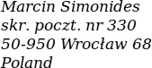

If you like the project and would like to see it grow here's what you can do: from small things, like leaving a review on the Play Store or sending a postcard, to more involved, like translating the app to your language.
By translating the user interface you can help non-English speakers set up and configure Homer.
Currently there are 200-250 phrases in the application, most of them in the settings screens. You don't need to translate everything, partial translation can be finished by another volunteer. Or maybe you can improve an existing translation.
Translations are handled with Lokalise. It's a service for managing translations. It has clean interface, is easy to use and works in a browser so you don't need to install anything. While translating you see the original phrases, their descriptions and screenshots from the application to put a given phrase in context.
Lokalise have kindly provided their service free of charge.
If you consider volunteering please e-mail me at info@homeraudioplayer.app. I will answer your questions and, if you wish, send you an invite to Lokalise.
App ratings help other users find the application on the Play Store.
You can open the rating page from Homer: go to settings and scroll down to the bottom to find
"Rate the app...".
You can also add rating on the web but please submit it from the same Google account that uses the Homer app. Otherwise Google might consider the rating fake.
Tell others about Homer: share the link to this website or the
promotional video on social media.
Or show the app to your friends, maybe they too have someone who would benefit from it.
E-mail me your feedback, both positive and negative. Maybe some function works in a weird way or
something is missing - let me know.
I won't implement every suggestion but your feedback will help me improve the app in time.
If you're listening to podcasts, consider supporting their creators financially. Many of them use Patreon or similar services to crowdfund their work. If they can't raise money they might move to YouTube, Spotify or other platforms for monetization and their content won't be available to independent apps like Homer.
Homer uses a free podcast search service: PodcastIndex.org. Consider also supporting this project if you can. Without it there would be no podcast search function in Homer.
I would gladly receive a postcard from where you live! Here's my P.O. box address: 
All work on Homer happens in my spare time. It doesn't require much funds but it requires
a lot of motivation. One look at the postcards that I have received reminds me that there are users
for whom this app is very important.
I am grateful to everone who sent one: thank you!